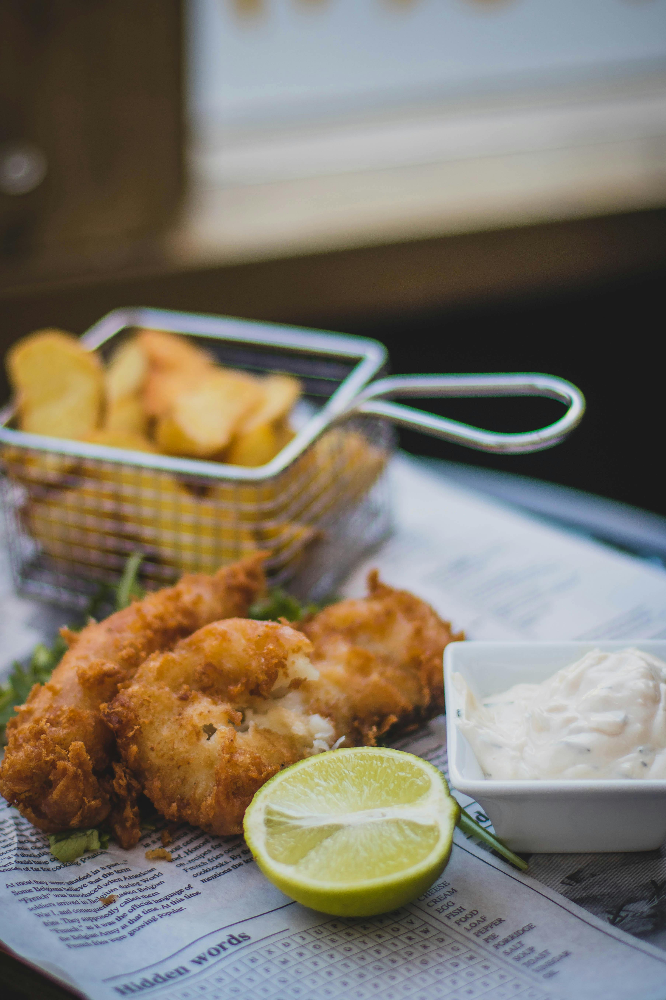

Fish and chips is a quintessential British hot dish consisting of a battered and deep-fried white fish fillet served alongside thick-cut fried potatoes (known as "chips" in the UK).
Widely regarded as a national dish of the United Kingdom, it is a staple takeaway food characterized by its contrasting textures of a crunchy, golden exterior and tender, flaky interior.
Traditionally, mild-flavored white fish such as cod or haddock is used. Other varieties like pollock, plaice, and sole are also common.
These are thick-cut potato strips, typically fried twice—once at a lower temperature to cook the inside and again at a higher temperature to crisp the outside.
Pour 1-2 inches of oil in a large pot and heat to 350 degrees.
Depending on the size and shape of your fillets, cut them into strips that are long and at least 1 inch wide. Lay the fish fillets on a paper towel and pat dry. Season them with sea salt and pepper and then dredge each filet in a little bit of flour.
In a large bowl, mix the flour, cornstarch, baking powder, paprika, salt and pepper. Whisk in the beer (or sparkling water) to the flour mixture and continue mixing until you have a slightly thick, smooth batter. If it’s too thick, add a little more beer.
Dip prepared fillets into the batter and use a spoon if needed to help coat the entire fillet.
In small batches so you don’t overcrowd the pans, carefully lower a few dipped fillets at a time into the hot oil. Fry for approximately 5-7 minutes, turning occasionally, until the batter is crisp and golden and the fish is perfectly cooked.
Once cooked, remove the fillets from the hot oil and drain on paper towels.
Use the same pot of hot oil to make French Fries.